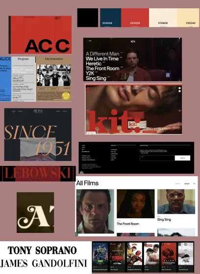
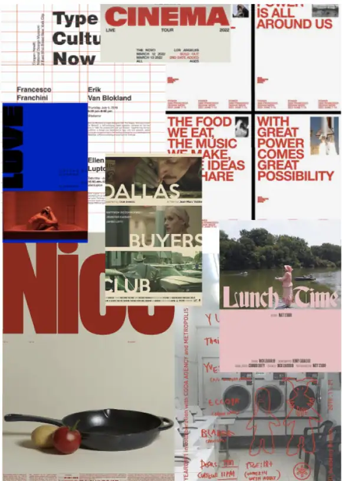
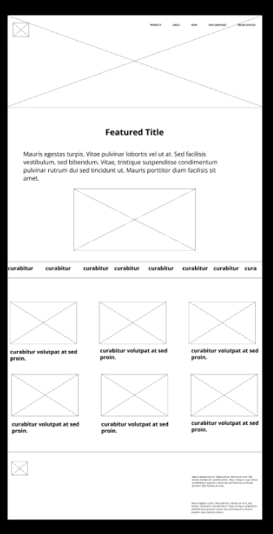
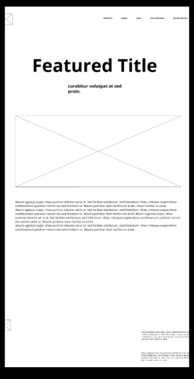
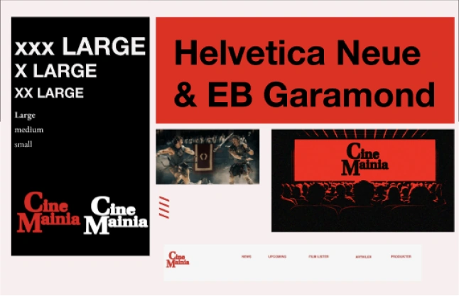

GRUNDLIG
GENDE
UI/UX
Grundlægende UI/UX
I tema 3 blev vi introduceret til User Experience Design (UX) og brugergrænseflader (UI). Her lærte vi
vigtigheden i at
skabe en balance, men også et samspil mellem de to. Derudover lærte vi også om betydningen af forarbejdet og
reseach.
Det var første gang vi virkelig gik i dybden med indhold og design, fremfor at gå direkte til kodning. Her
lærte vi om
forskellige ideudvikling værktøjer, og test metoder, som var med til at føre os frem til det endelige
resultat. Denne
del af processen var jeg især fan af, jeg lærte nogle ekstremt fede metoder til at udvikle gennerelle
kreative ting, ved
hjælp af figma, hvor jeg kunne sætte en hel kreativ process op på et samlet dokument. Dette gjorde det
utroligt meget
nemmere at præcentere min process og ideudvikling .
Opgave
Vi fik til opgave at Designe en hjemmeside, om et valgfrit emne. Til slut skulle vi så lave en præcentation
om vores
designprosess og valg, både i forhold til ui/ux og estetiske valg.
PROCESS


Til at starte med i processen, gik jeg igang med to forskellige slags brainstorms.
interesse emner
vinkle på valgt interesse
Derefter prøvede jeg at udfolde mit udgangspunkt på emne og målgruppe. Dette førte mig frem at hjemmesiden
skulle laves
om film, og fungere lidt som en film-blog, hvor målgruppen skulle være allerede interesseret film fans,
eller grupper
der ville lære mere om film.
Jeg arbejdede videre med userstories, og reaseach af af allerede eksisternde hjemmesiders brugerflows og
estetik. Jeg
begyndte så på at lave moodbords og finde frem til billeder og alt der skulle indgå i hjemmesiden. det førte
mig så frem
til at lave styletile, samt lofi og hifi wireframes .



Vi brugte vores styletile til at viderudvikle en prototype af vores hjemmeside, som vi så kunne begynde at
lave
forskellige bruger test. Vi lavede test som:
5-sekunders test
Tænke-højt test
Interviews med målgruppen
Derefter kodede vi hjemmesiden, og lavede nogle forskellige test på hjemmesidens. her brugte vi primært
lighthouse
testen, der kunne fortælle en hvad man kunne gøre for at øge hjemmesidens funktionalitet, så som at omdanne
billeder til
webp.